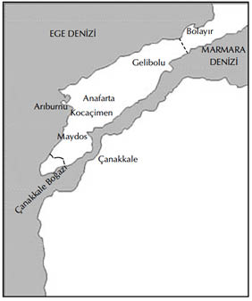

XII
Enver, İstanbul’da değildi. Ruslara karşı savaşacak bir orduyu yönetmek üzere Kafkaslara gitmişti. Yerine vekâleten Topal Hakkı Paşa6 bakıyordu. Enver’in özel çekişmeleri, onu hiçbir şekilde ilgilendirmiyordu. En iyi subaylara, hem de hemen ihtiyacı vardı. ingilizler iki kez savaş gemileriyle Boğazlardan geçmeye çalışmışlardı. Alınan tüm istihbarat, Gelibolu’ya çıkarma yapmak üzere Mısır’da büyük bir ordu hazırladıklarını göstermekteydi. Liman von Sanders de büyük bir hızla bu saldırıya karşı koyacak yeni bir ordu hazırlama çabasındaydı.
Hakkı Paşa, Mustafa Kemal’in politikadan uzak durduğu sürece çok yetenekli bir subay olduğu yolundaki sicilini biliyordu. Telgrafla onu çağırdı ve Liman von Sanders’e tavsiye etti. General de Mustafa Kemal’e Gelibolu Yarımadası’nın güney kesimindeki birliklerin kumandasını verdi.
Von Sanders’in ortalama Türk subayı konusunda oldukça olumsuz düşünceleri vardı; ama kısa sürede Mustafa Kemal’in ortalamanın üstünde olduğunu takdir etti. Hiç kuşku yok ki, geçinilmesi güç biriydi, sözünü sakınmıyordu; düşüncesini dile getirirken ters ve haşindi. Bir keresinde Alman generale Almanya’nın nihai başarısının hiçbir şekilde kesin olmadığına göre, Bulgaristan’ın tarafsız kalmakla son derece yerinde davranmış olduğunu söylemişti. Bir başka fırsatta da. Alman genelkurmayının canicesine ağır ve dikkatsiz olduğuna işaret etmişti. Fakat bir asker olarak görevini çok iyi yapıyordu. Düşüncelerinde berrak ve kararlarında kesindi. Kanılarını daima somut gerçeklerle desteklemekteydi.
Her iki erkek de son derece kibirli olduğu için, von Sanders’le sık sık ve şiddetli fikir ayrılıklarına düşüyorlardı. Bununla birlikte, Mustafa Kemal bir Prusyalı bakış açısına ve tavırlarına sahip olduğu için, von Sanders onu gayet iyi anlıyordu. Katı, patavatsız ve mağrurdu; fakat hepsinin ötesinde, o birinci sınıf bir savaşçıydı.
Onu “Muhteşem bir asker bir önder” olarak değerlendiren von Sanders, Mustafa Kemal’e çok güveniyordu.
Mustafa Kemal de, yabancılara, özellikle de Enver’in getirdiği müdahaleci Almanlara karşı duyduğu nefrete rağmen, von Sanders’e saygı duymaktaydı. Alman’ın cesur ve becerikli bir asker olduğunu teslim etmişti.
Onun herhangi biri hakkında pek ender olarak olumlu sözler söylediği göz önüne alınırsa, kendisi için alışılmadık bir cömertlik anında; “Liman von Sanders’de üst düzey bir askerin bütün özellikleri var. Çoğu zaman anlaşamıyoruz; fakat bir kere emrini verdiği zaman, onları en uygun şekilde yerine getirebilmem için beni tümüyle serbest bırakıyor.” demişti.
Kahire ve Atina’daki tüm haber kaynaklarından, ingilizlerin saldırmak üzere olduğu haberi gelmekteydi. Mısır’da seksen bin kişilik bir ordu hazırdı; büyük bir filo da harekete hazır bir şekilde emirlerini bekliyordu.
Von Sanders, çözümü çok güç bir sorunla karşı karşıyaydı. Gelibolu Yarımadası’nın kıyı şeridi yaklaşık seksen beş kilometre uzunluğundaydı. Arazi dağlıktı ve çevrede, tüm mevkie hâkim çok sayıda tepe vardı. ingilizler seksen bin askerini bu seksen beş kilometrelik kıyı şeridinin herhangi bir yerine çıkarabilir, hâkim tepelerden birini ele geçirip onu yarımadadan sürüp çıkarabilir, böylece İstanbul’a giden yolu açabilirlerdi.
Von Sanders’in altmış bin askeri vardı. Bunları yirmişer bin kişilik üç gruba ayırdı ve her bir grubu yarımada boyunca yerleştirdi. ingilizlerin ne zaman ve nereden geleceği tümüyle belirsiz olduğu için, oturup beklemekten başka çare yoktu. Hangi grup üstün düşman kuvvetlerinin saldırısına uğrayacak olursa, takviye kuvvetleri onlara yetişinceye dek, iki üç gün kadar dayanması gerekecekti.
Rusya cephesinden dönen Enver, hiç zaman kaybetmeden Mustafa Kemal’in yerine başkasını koymak üzere emirler göndermişti. Emirlere uymak zorunda kalan von Sanders, duyduğu üzüntüyü Mustafa Kemal’e açıkça belirterek, onun Maydos’daki 19. ihtiyat Tümeni’nin kumandanlığına atandığını bildirdi. Bunun yanı sıra, asıl ingiliz hücumunun nereden geleceği belli oluncaya değin, tümenini yerleştireceği yer konusunda ihtiyatlı olması emrini verdi.7
Enver’in emirlerinden dolayı kızgın olmakla birlikte, Mustafa Kemal, von Sanders’in kendisine güvendiğini anlamıştı. Kendisine güvenen, onu destekleyen ve kendisinin de saygı duyduğu bir üstün nezdinde aldığı kumandanlık, Mustafa Kemal’e adeta yeni bir kişilik kazandırdı. Her zamanki şikâyetçi ve huzursuz halinden eser bile kalmamıştı. Kendini olanca gücüyle işine verdi. Potansiyel olarak içinde barındırdığı tüm güç ve yetenek kendilerini ortaya koyuyorlardı. Tümeni, biri iyi durumdaki Türk, kalanı da son derece zayıf durumdaki iki Arap alayından oluşmaktaydı. Birkaç hafta içinde askerlerini birinci sınıf bir askeri kuvvete dönüştürdü. Arazi üzerinde incelemeler yaparak, tümü olasılıklara karşı farklı planlar hazırladı.
25 Nisan Pazar günü, ingiliz saldırısı başladı. Hafif bir sis denizin üzerini kaplamıştı. Sisin ötesinde büyük bir dalga halinde -savaş gemileri, destroyerler ve nakliye gemilerinden oluşan- çelik bir filo kayıp gidiyordu. Bir kesimi yarımadanın kuzeyindeki Bolayır’a saldırdı. Bu aslında, asıl hücum noktasını saklamak için yapılan bir askeri hilesiydi; ancak, von Sanders’i yanıltmaya yetti. Bir başka hileli saldırı da güneye yapıldı.

İngilizlerin ilerleme sınırı, 1915 Gelibolu Seferi Haritası
Asıl hücum ise merkezden geldi. Saldırı birlikleri Avustralyalılardan oluşmaktaydı. Bu saldırının hedefi Kaba Tepe’ye çıkartma yapıp Maydos Vadisi’ne doğru ilerlemek ve ardından dönüp, tüm mevkie hâkim olan ve Mustafa Kemal’in kampının yakınlarındaki, Conk Bayırı adıyla tanınan tepeleri ele geçirmekti.
Güçlü bir akıntı, çıkarma gemilerini kuzeye doğru sürüklediğinden, Avustralyalılar, yanlışlıkla Arıburnu’na çıktıklarında, kendilerini Conkbayırı tepesinin sarp uçurumlarına varan eteklerindeki dar kıyı şeridinde buldular.
Mustafa Kemal’in bu olanlardan haberi yoktu. En iyi alayı olan 57. Alayı’na sabah saat 5:30’da günlük bir tatbikat manevrası yaptırmak üzere, Conkbayırı yokuşuna gitmesini emretti. Tepeye tırmandığı sırada, tepeden aşağı kaçarcasına inen Türk müfrezelerini gördü.
“Nereye gidiyorsunuz?” diye bağırdı.
“ingilizler çıkarma yaptı. Biz sahil boyunca yerleştirilen öncü kuvvetleriyiz. Çekilmek zorunda kaldık.” “Nereye çıktılar?” “Arıburnu’na.”
“Süngülerinizi takıp geri dönün!” emrini verdi.
Birkaç dakika sonra sağ yanındaki 9. Tümen’den düşman hakkındaki haberleri doğrulayan ve sol cenahlarını kapatmak için bir tabur isteyen bir haber geldi.
Mustafa Kemal hemen durumun muhasebesini yaptı. Von Sanders’in saldırının yarımadanın kuzey ucundaki Bolayır yakınlarına yapılacağına inandığını biliyordu. Fakat tüm mevkie hâkim olan asıl yer, Conkbayırı’ydı. Gelen haberler arttıkça, büyük bir kuvvetin tam önünde çıkartma yapmakta olduğu ve hedeflerinin de Conkbayırı’nı ele geçirmek olduğu açığa çıktı. Ansızın ve adeta içgüdüyle, Conkbayırı’nı kendisinin savunması ve derhal harekete geçmesi gerektiğini anladı. Emirleri bekleyemezdi; dakikalar sayılıydı. Napolyon’un “Vitesse, vitesse, toujours vitesse” (Sürat, sürat, daima sürat) şeklindeki düsturu onun her zaman kullanmaktan hoşlandığı bir deyiş olmuştu.
“Fişekleriniz kurşunlu mu yoksa boş mu?” diye sordu.
“Kurşunlu,” diye cevap verdi, bir kurmay yüzbaşı.
“O halde derhal yola çıkın ve mümkün olduğu kadar çabuk Conkbayırı’na ulaşmaya bakın.”
Elinin altında yalnızca küçük ölçekli bir harita vardı. Üzerinde Arıburnu bile gösterilmemişti. Bir elinde bu harita, diğerinde bir pergel ve kendisine kılavuzluk eden bir askerin eşliğinde, iki yüz adamıyla tepeye koştu. Zemin çamurluydu, bodur çalılarla kaplıydı ve derin dere yataklarıyla yarılmıştı. Adamları ona ayak uyduramıyorlardı. Tepeye vardığında, yanında sadece birkaç asker kalmıştı. Tam aşağısında, 400 metreden uzak olmayan son bayırın yarı yolunda Avusturyalıların öncü kollarının ilerlemekte olduğunu gördü.
Alay kumandanı adamlarını araziye dikkat etmeleri konusunda uyarmak için bir miktar arkada kalmıştı. Mustafa Kemal en yakınındaki üst rütbeli askere seslendi:
“Bulabildiğin kadar asker topla, ilerle ve düşmana saldır!” emrini verdi.
57. Alay Birlikleri rüzgârdan ve sürekli tırmanıştan tükenmiş bir halde tepeye ulaştıkça, hepsini bizzat yeniden düzenledi ve ileriye sürdü. Bir topçu bataryası yetişti. ilk topun yerleştirilmesi işini kendisi yaptı. Sürekli ateş altında çılgınca bir enerjiyle çalışmaktaydı. Emirler gelmeden, sorumluluğu kendisi üstlenerek ikinci alayı da çağırdı, ateş hattına gönderdi.
ihtiyatlı olması konusundaki emirleri hiçe saymıştı. Sorumluluğu kendi üzerine alarak, tüm ordu ihtiyatlarını doğrudan savaşın içine sürmüştü; elde bir tek yedek bile kalmamıştı. Asıl saldırıya karşı koyduğuna inanıyordu. Eğer yanılmışsa ve asıl hücum bir başka yerde yapılıyor idiyse, bu hatası büyük bir felakete yol açacaktı. Fakat yanılmamıştı. içgüdüsü onu haklı çıkaracaktı. Ama onun içgüdülerinden hiçbir zaman kuşkusu olmamıştı, zaten.
O gün çarpışmalar, bazen coşup taşarak, bazen azalarak bütün gün boyunca sürdü. Avusturyalılar dağ yolunun üçte ikisini kat etmiş durumdaydılar. Türkler hızla tükenmeye yüz tuttular; 57. Alay’ın büyük bir bölümü imha edilmişti. iki Arap alayı kargaşa halinde ve her an bozulma eğilimindeydi; ancak Avusturyalılar da bitap düşmüştü. Her iki taraf için de ekstra beş yüz asker, çatışmanın o anda kazanılmasını sağlayabilirdi.
Karanlık çöktüğünde, tepe hala Türklerin elindeydi; Avustralyalılar ise, hemen biraz aşağıda tepenin yamaçlarına tutunmuşlardı.
Ancak, Mustafa Kemal beklemedi. Karargâhını doruğun birkaç metre gerisindeki kayaların arkasına kurdurtarak bütün gece ve ertesi gün, Avustralyalıları tepeye iyice yerleşmelerine fırsat vermeden denize kadar sürebilmek için durmamacasına hücum üzerine hücum düzenledi. Başarısızlığa uğrayan her hücumun ardından, bir yenisini hazırladı. Adamlarına cesaret vermek üzere sürekli ateş hattında bulunuyordu. Onların dinlenmelerini ve sıcak yemek yiyebilmelerini bizzat kendisi ayarlıyor ve sarsılmaz enerjisiyle onlara örnek oluyordu. Ne ki Avustralyalıları durdurmayı başardığı halde, dağın eteğinden onları denize sürmeyi başarması mümkün olamıyordu.
Conkbayırı’nın doruk çizgisi İstanbul’a giden yol üzerinde Çanakkale Boğazı’na hâkim kilit bir mevkiiydi. Boğazlar ve İstanbul düştüğü takdirde Türkiye’nin Almanya’yla bağlantısı kesilecek ve barışa zorlanabilecekti. Yunanistan, Romanya ve Bulgaristan büyük bir olasılıkla ingilizlere katılacaklardı. Bunların sağlayacağı psikolojik etki, dünya çapında olacaktı. Rusya yolu açılacak ve Rusya’ya silah ve yiyecek gönderilebilecekti.
Avustralyalıların saldırıları ile bu dehşet verici olasılıklar arasında asık yüzlü, kararlı hali ve yorgun Türklerini Conkbayırı’nın dar zirvesindeki mevkilerinde sadece egemen kişiliğinin gücüyle tutabilen Mustafa Kemal duruyordu.